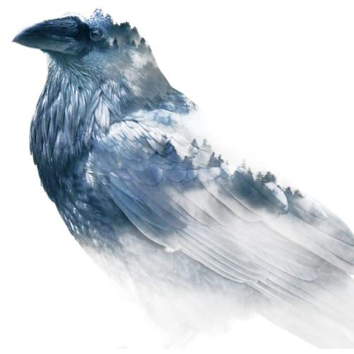
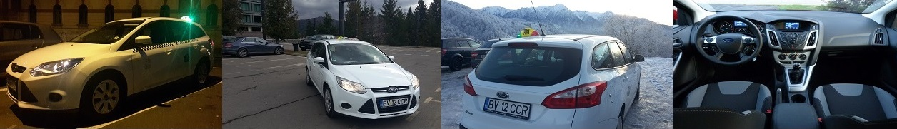

Taxi Predeal The Raven, este compania din Orasul Statiune Predeal, care ofera servicii de transport in regim de taxi in Orasul Predeal, cat si oriunde in tara, cu plecare din orasul Predeal, non-stop (de luni pana duminica, pe tot parcursul anului).
De la inceputul functionarii pana in prezent, am dat dovada de seriozitate, punctualitate, iar clientii nostri s-au simtit confortabil si in siguranta.

TAXI Predeal The Raven TAXI efectueaza curse cu precomanda, sau comanda directa pentru transfer catre sau de la oricare dintre aeroporturi.
Oricare ar fi destinatia aleasa de dumneavoastra, puteti apela cu incredere TAXI PREDEAL The Raven TAXI, pentru a avea o calatorie sigura, placuta, rapida si relaxanta.
TAXI PREDEAL The Raven TAXI este alegerea perfecta si pentru vizitarea obiectivelor turistice din Predeal si imprejurimi:
Castelul Peles, Castelul Pelisor, Manastirea Sinaia, Cota 1400, Casa memoriala George Enescu, Castelul Cantacuzino, Castelul Bran, Cetatea Rasnov, Prapastiile Zarnestiului, Manastirea Predeal, Belvedere, Cioplea, Paraul Rece, Cabana Susai, Trei Brazi, Cabana Poiana Secuilor si nu numai.
Taxi Predeal Raven Taxi — Strada Intrarea Gării, Predeal
📞 Comenzi taxi:
0799 419 517